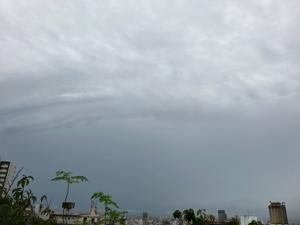

うるがいの話 ある日
最新: プログサイト更新できず【うるがいの話 ある日】とは 一日だけのプログです
『うるがいの話』の最新一日だけのプログで、通信料が少なく経済的だ。カニの画像をクリックすると全ての日付が載る『うるがいの話』サイトを表示します
|
|
【うるがいの話】 うるがい(ｳﾙｶﾞｲ urugai)とは、『もずくがに』の名前でとても大きくなります。 |
|---|---|
|
|
【カミマヤーの話】 猫のことを方言でマヤーといいます。カミマヤー（kamimayaa）とは、神の猫のことです。 |
|
【たながぁの音楽】 たながぁ（ﾀﾅｶﾞｰ tanagaa）とは手長えびのことで、何種類かあり大きいのは車 エビぐらいになります。 |

|
【ぶながぁの話】 ぶながぁ(ﾌﾞﾅｶﾞｰ bunagaa)とは、赤い髪の毛、赤い身体、そして身長は１ｍ２０ｃｍ ぐらい、川の蟹を食べているの目撃された。場所は沖縄県国頭郡大宜味村のと ある村僕の隣近所に住んでいる爺さんから、聞いた話です。 |
|
|
【ギーマの話】 ギーマ(giima)とは、山原の里山に咲くスズランに似た、 花を付けます。実は食べられます、 気が付くと口の周りが紫になっています。 |
2023年06月15日 (木）プログサイト更新できず
17:37

今朝、１時半に災害の広報（洪水警報）で目を覚まされる。ん、これって本当
に必要なのだろうか、ウクライナ戦争でミサイルの警報で眠れないと言ってい
るが、プーチンはヒットラーと同じだと、私は怒っている。怒っていると言え
ば、昨日、Ｓｏｕｒｃｅｔｒｅｅというソフトを使って、プログのアップを行
おうとしたところ、あっけなくソフトは落ちてしまう。ほほー、この数時間前
にｗｉｎｄｏｗｓのアップデートを行ったばかりである。別のパソコンＰＣ３
号も同様に起動しない。明らかに、ｗｉｎｄｏｗｓのアップデートが原因であ
る。・・・・、話はながくなるので割愛するが、再インストールすることで無
事、動作することになる。おとといから、Ｂｉｔｂｕｃｋｅｔ（うるがいの話
ある日、たながぁの音楽）から、通告により、２日かけてEd25519のSSH
キーに替えたばかりなのにである。
Bitbucket Cloud ユーザーの皆さん、こんにちは。
以前にお知らせしたように、ワークフローの中断を避けるために、
2023年6月20日17:00UTCまでに、新しいECDSAまたはEd25519 SSHキー
を使用するようにSSHクライアントを更新することを強くお勧めします。
理由を調べると
こんにちはBitbucket Cloudユーザー、最近、
BitbucketのSSHホストキーの暗号化されたコピーがサードパーティの
資格情報管理ベンダーのデータ侵害に含まれていることを知りました。
もしかして、これと連動しているのかな。連動していると言えば、ヨメに提供
したコドモが使っていたノートパソコンを、午後なにげなく触ったら、文字を
入力しようとすると「｜｜｜｜｜｜｜｜｜｜｜｜｜｜｜｜｜｜・・・・・」と
続けざまに打ち込まれてどうしょうもない！。ヤバイ、これも壊れたと思い、
高性能のＰＣ３号を買ったため、押し入れに寝かしてしたディスクトップパソ
コンＰＣ２号を取り出して、一年ぶりに電源を入れる。プラウザのお気に入り
などをノートパソコンから、移植などセットアップしていると、ヨメが何して
いる！！、またパソコン替えるのと怒っている。イヤ、じつは昨日替えたノー
トパソコンも壊れてしまったから・・・、と現象を見せる。あ、これ朝に出て
いたヨ。え、ノートパソコンのキーボードをガチャガチャ押しまくるとやがて
｜｜の連続がなくなり、普通に打ち込めるようになった。どうも、キーボード
が壊れて特定の場所が、押されて続けているような状態になっていたようだ。
職場で、キーボードの上にファイルを載せて、誤動作させるような感じ。ヨメ
は、壊れているキーボードの上に、外付けのキーボードをのせて、ディスプレ
イを閉じていた・・・・・・・。で、せっかくセットアップしたＰＣ２号は場
所をとるから、ノートパソコンに戻せと指示され、泣く泣く戻した。とても疲
れたので、気分転換に小雨が降る中ジョギングへ行く。
１７時３０分 ビットコインの総資産 ￥１０、２４５（↓２８０）